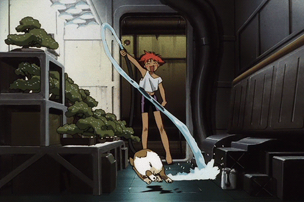

Challenge 4 - Javascript et le canvas HTML5

Dans ce challenge, tu peux utiliser les fonctions Javascript suivantes:
c.strokeStyle = "couleur";: définit une couleur à utiliser pour les bords des éléments suivants. Tu trouveras une liste de couleurs utilisables à cette adresse.c.strokeRect(positionX, positionY, largeur, hauteur): dessine un rectancle videc.strokeCircle(positionX, positionY, rayon): dessine un cercle vide
c.fillStyle = "couleur";: définit une couleur à utiliser pour le remplissage des éléments suivants. Tu trouveras une liste de couleurs utilisables à cette adresse.c.fillRect(positionX, positionY, largeur, hauteur): dessine un rectancle coloréc.fillCircle(positionX, positionY, rayon): dessine un cercle coloré
Dessins géométriques
Modifie le code Javascript ci-dessous pour accomplir et cocher les défis suivants:
- tout d'abord, joue avec les nombres ci-dessous pour essayer de transformer les rectangles en carrés
- place le cercle au centre de la zone de dessin, le carré noir en bas à gauche et le carré filiforme en bas à droite
- rend les carrés bleus, et seulement les carrés ! Puis essaie d'autres couleurs
- ajoute un cercle, rempli en vert
c1.fillStyle = "black";
c1.fillRect(20, 20, 50, 75);
c1.strokeStyle = "black";
c1.strokeRect(100, 100, 60, 80);
c1.strokeCircle(150, 150, 80);
Si quelque chose ne fonctionne pas, tu peux observer les messages d'erreur en ouvrant la ouvre la console Javascript de ton navigateur: appuie sur F12 si tu utilises Firefox, ou bien si tu utilises Chrome simultanément sur Ctrl+Shift+J dans l'ordre.

Boucles
Voici un nouveau concept très puissant en programmation !
La bouclefor permet de répéter des instructions.
Modifie le code ci-dessous pour:
- aligner tous les carrés sur une ligne
- afficher seulement 3 carrés
- espacer les carrés pour qu'ils ne se superposent plus
- grossir la taille des carrés
- remplacer les carrés par des cercles
Attention ! Dans ce nouveau canvas, les commandes doivent débuter par c2 au lieu de c1.
for (i = 0; i < 10; i = i + 1) {
decalage = 20 * i;
c2.strokeRect(100 + decalage, 100 + decalage, 50, 50);
}
En piste l'artiste !
Pour finir, essaie de dessiner un visage !
Cette fois, écris le code dans le fichier 4.js, et débute tes commandes avec c3, pour utiliser le canvas ci-dessous.
Si tu veux, tu peux aussi tracer des lignes:
- commence par définir une couleur de ligne avec
c.strokeStyle = - débute le tracé de ta ligne par
c.beginPath()puis définit ton point de départ avecc.moveTo(positionX, positionY); - rajoute des points avec
c.lineTo(positionX, positionY); - enfin, conclu ton tracé par
c.stroke());
Par exemple:
c.beginPath();
c.moveTo(150, 100);
c.lineTo(200, 200);
c.lineTo(100, 200);
c.lineTo(150, 100);
c.stroke();Tu peux aussi résutiliser ce que tu as déjà vu sur les variables et les "string" pour afficher du texte:
var text = "Ed";
c.fillText(text, 50, 50);
c.fillText(text, 100, 50);